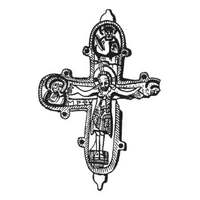

Catalog › CE-0986 · KOR2003-III.1.1.12
Valvă de față de encolpion fragmentară cu Răstignire în relief și semifigurii în niello în medalioane
sec. mijlocul XII (1101–1200) · Kiev, Andreevski spusk, Ucraina · Muzeul Național de Istorie al Ucrainei, Kiev, inv. № В-4552/163 (19637, 329)
single valve of a reliquary cross, aramă; c. mijlocul XII (1101–1200); found at Kiev, Andreevski spusk, Ucraina; kept at Muzeul Național de Istorie al Ucrainei, Kiev.


Identificare
- Categorie
- Valvă izolată
- Material
- Aramă
- Tehnică
- Turnare în relief; Gravare (incizie); Niello
- Stare
- Fragmentară
- Dimensiuni
- Î 82 × L 65 mm
Iconografie
- Avers
- Sfinți militari
- Descriere avers
- Valvă de față fragmentară (deteriorat și parțial pierdut capătul drept al valvei, rupt capătul balamalei de sus). S-a păstrat complet imaginea reliefată a lui Hristos răstignit și semifigurile în niello din medalioane (în cel de sus, un sfânt militar de față; în cel din stânga Maica Domnului îndurerată, întoarsă spre Hristos; imaginea din medalionul drept s-a păstrat doar parțial). Toate imaginile sunt prelucrate în detaliu cu dalta. Nielloul umple nu numai imaginile din medalioane, ci și scobiturile de pe ieșiturile „lacrimă”.
- Inscripții
- МР ΘҮ
- Limba
- Greacă
Datare și atribuire
- Datare
- sec. mijlocul XII (1101–1200)
- Centru
- Necunoscut
- Tipologie
- Korzukhina–Peskova 2003, tip III 1 1
Descoperire
- Localitate
- Kiev
- Regiune
- Andreevski spusk
- Țară
- Ucraina
- Context
- Necropolă / mormânt
Păstrare și referințe
- Colecție
- Muzeul Național de Istorie al Ucrainei, Kiev
- Nr. inventar
- № В-4552/163 (19637, 329)
- Bibliografie
- G. F. Korzukhina, A. A. Peskova, Древнерусские энколпионы. Нагрудные кресты-реликварии XI–XIII вв., Sankt-Petersburg, 2003 [Korzukhina–Peskova 2003], p. 103, cat. nr. III 1 1/12, reprodusă la Табл. 52 (planșe, p. 294). Bibliografie citată în sursă: Леопардов 1891а, табл. Va, 36; Леопардов 1893, табл. II, 4; Корзухина, архив ф. 77, д. 15, л. 46, 47.
- Figura
- Табл. 52
- Planșe
- Korzukhina–Peskova 2003, Табл. 52 (planșă fără paginație proprie în PDF; p. 294 tipărită)
- Observații
- Datare după Peskova: sec. mijlocul XII. Circumstanțe: Descoperire întâmplătoare la Andreevski spusk, în timpul lucrărilor de pământ; găsit împreună cu un schelet uman și resturi de sicriu. Dimensiuni: fragment. Inscripție adâncită sub mâna dreaptă a lui Hristos. Desen: G. F. Korzuhina. Coordonate: nu sunt date în sursă.
Citare: Corpus Encolpiorum, CE-0986, Valvă de față de encolpion fragmentară cu Răstignire în relief și semifigurii în niello în medalioane, https://vitaliejosanu1979-ux.github.io/primul-meu-proiect/piese/KOR2003-III.1.1.12/ (accesat 2026-10-17).